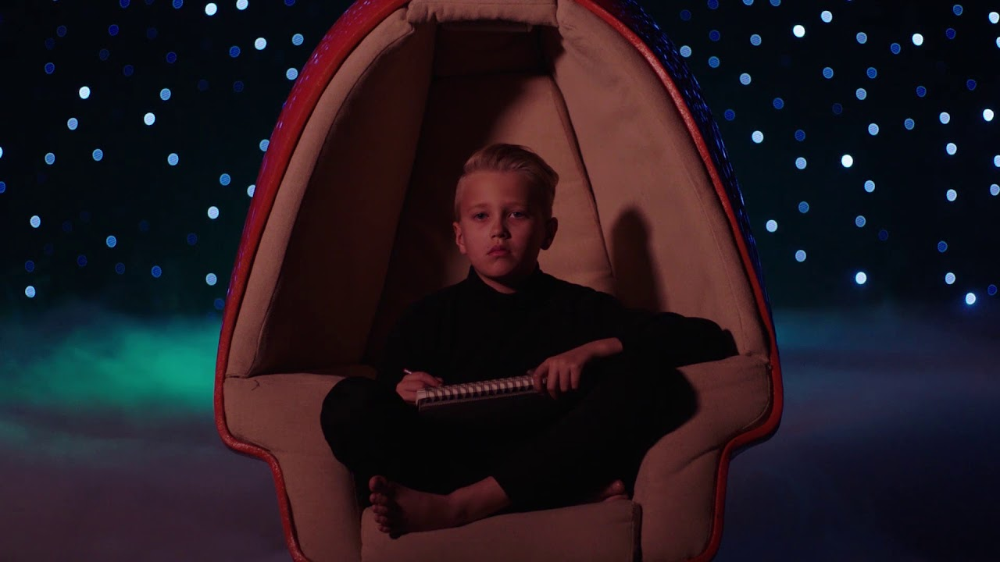

Music Video - Adobe Make the Cut Challenge

Overview
As part of Adobe's Make the Cut Challenge, I received the provided Imagine Dragons footage and audio and independently edited and compiled the final music video. The challenge allowed me to explore pacing, sequencing, transitions, sychronization, and visual storytelling while working within an existing set of creative assets.